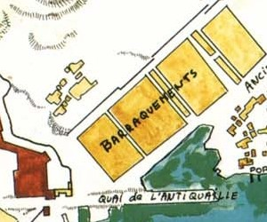

Le Pouvoir
L'EMPEREUR-DÉMON
Le Cloaque pourrait paraître être une vraie jungle, un lieu où seules règnent l'anarchie et la loi du plus fort. C'est dans une certaine mesure vrai. Toutefois une personne semble avoir réussi à contrôler ce chaos et à imposer sa domination sur la majorité des créatures du Cloaque. Cet être sanguinaire et dénué de tout scrupule est un vampire répondant au nom de Trevélian.
L'Empereur-Démon, comme il s'est auto-proclamé, n'a qu'une idée en tête : renverser le Roi-Dieu et devenir maître de la surface. Il l'a déjà tenté à plusieurs occasions, sans succès, mais n'abandonne pas l'espoir de réussir un jour. Trevélian est très imbu de sa personne et convaincu d'être une créature intellectuellement supérieure.
La cité de Laelith est dirigée par le Roi-Dieu, assisté de son conseil. Lorsque celui-ci meurt ou parvient à l'Intime Quintessence, le dernier stade de la perfection intérieure, les quatre grands prêtres se réunissent pour choisir parmi eux un successeur. Dans certains cas le choix s'arrête sur une tierce personne, si aucun des grands prêtres ne fait l'unanimité. Le passage à l'Intime Quintessence d'un Roi-Dieu a lieu au cours d'une grande cérémonie publique, dans une salle du Palais où le souverain fusionne avec les éléments. La tradition veut qu'alors l'âme du Roi-Dieu se réincarne dans le corps de son successeur. L'actuel Roi-Dieu est Teaphanerys XIV (clerc niv 20).
Le conseil du Roi-Dieu est donc composé en premier lieu des quatre grands prêtres des temples de Laelith. Ils sont soumis à l'autorité du souverain qui leur donne ses directives, chacun étant chargé de l'administration d'un aspect particulier de la cité. Les grands prêtres sont assistés dans leur tache par d'innombrables subordonnés, clercs ou laïcs, qui exécutent leurs ordres.
- Anematès (clerc niv 16), grand prêtre de l'Oiseau de feu, est chargé de la défense, donc de l'armée et de la Garde.
- Mitrias (clerc niv 17), le grand prêtre du Nuage, supervise les archives, l'enseignement et la justice.
- Xéniphys (clerc niv 16), grand prêtre du Poisson d'argent, est responsable du commerce et des taxes.
- Valdenath (clerc niv 14), grand prêtre du Crâne, s'occupe des relations avec les provinces et les nations étrangères, mais également de la police secrète et des espions.
Le cinquième membre du conseil est le maître de la Haute Guilde. Lui ne participe pas au choix du successeur au trône, mais sa voix compte à l'égale de celle de chaque grand prêtre pour tous les autres sujets politiques. Il est nommé par le conseil jusqu'à révocation.
Toutes les provinces du royaume sont autonomes, bien que vouant allégeance au Roi-Dieu. Chaque entité fixe par exemple ses lois ou ses impôts, et a la charge de les faire appliquer. Le conseil du Roi-Dieu n'intervient que pour régler les litiges.
Les quatre temples
Valdenath
Grand prêtre du Crâne
Les temples permettent à tous les prêtres de tous les cultes existants d'éviter des affrontements trop fréquents qui pourraient nuire à l'intégrité de l'univers. Ces temples donnent la possibilité aux prêtres de toutes les religions de se rencontrer, de s'expliquer et de se mesurer, afin que la cohérence et l'harmonie règnent toujours entre les croyances, même si elles sont apparemment opposées. Les temples de Laelith sont au nombre de quatre :
- Le temple de l'Oiseau de feu, aux innombrables brasiers, sert de lieu de communion à tous les cultes fondés sur le feu ou la puissance physique. Un feu gigantesque brûle en permanence au centre de sa grande cour circulaire et rappelle aux fidèles que le feu est dispensateur de chaleur et de lumière.
- Le temple du Nuage est dédié aux cultes de l'air et au mysticisme le plus éthéré. Il est surmonté de nombreuses plates-formes à ciel ouvert où les croyants viennent méditer sans souffrir d'un quelconque confinement.
- Le temple du Poisson d'argent est consacré à l'eau et aux principes de régénération qui lui sont associés. Les adorateurs des océans et des cours d'eau s'y retrouvent ainsi que les partisans de la pluie.
- Le temple du Crâne est voué à la terre et accueille les adorateurs de la terre et du Matériel, par opposition au Spirituel.
La justice
Le quartier de la justice ne passe pas inaperçu sur la carte de Laelith, de par sa taille. L'explication en est qu'outre les nombreuses cellules des prisons, ce quartier abrite également de multiples tribunaux et les riches maisons des hauts magistrats des différentes cours de jugement. Il y a trois types de justice à Laelith.
Les tribunaux religieux
La première justice est la religieuse. À l'origine, chacun des quatre temples de la cité possédait sa propre cour de justice où étaient jugés les crimes et les hérésies liés aux cultes qu'ils abritaient. Mais avec le temps, de nombreux cultes ont fondé leur propre tribunal, puis leur propre prison. On trouve donc aujourd'hui dans ce quartier des bâtisses de plus ou moins grande importance abritant par exemple la cour de justice de Torm ou celle d'Amaunator pour ne citer que les deux plus importantes. Les procès étant instruits par la cour de justice du culte plaignant, les tribunaux des quatre temples sont donc eux aujourd'hui presque abandonnés, et ne servent plus que lorsque la distinction entre le plaignant et l'accusé n'est pas évidente... ce qui arrive parfois.
Les crimes religieux jugés dans ces tribunaux se réfèrent donc aux actions mettant en cause la foi. Les cas les plus courants sont les jugements pour hérésie ou pour blasphème. Dans le premier cas l'accusé est jugé pour avoir été surpris à vénérer à l'intérieur de la cité des dieux non-autorisés, ou bien à l'inverse pour avoir nié l'existence d'un dieu reconnu (voir le panthéon officiel pour la liste des dieux reconnus). Dans le second, l'accusé a prononcé des paroles outrageantes envers une divinité ou un culte, voire même envers un prêtre, à cause de sa foi.
Blasphème. Parole ou discours outrageant à l'égard d’une divinité, d’une religion, ou d'une personne considérée comme sacrée.
Hérésie. Doctrine ou opinion qui diffère des croyances établies.
Profanation. Porter atteinte à un lieu revêtu d'un caractère sacré, par un acte d'irrévérence ou un acte impie.
Pilori. Poteau ou appareil tournant sur un pilier situé sur une place publique, auquel on attachait un condamné, avec un carcan au cou, pour l'exposer aux regards de la foule et marquer ainsi son infamie.
Chaque culte tend à vouloir appliquer ses propres lois et ses propres sanctions, qui diffèrent énormément suivant la sensibilité des divinités, mais dans l'ensemble tous ces crimes sont sévèrement punis. Mitrias, grand prêtre du temple du Nuage et premier magistrat de la cité, a pour rôle difficile de normaliser cette justice et de veiller à ce qu'aucun tribunal religieux ne dérape dans sa manière d'appliquer sa loi. Pour ce faire, ce grand prêtre s'invite fréquemment aux procès afin d'en surveiller le déroulement. S'il détecte un abus, il peut prononcer la proscription judiciaire, qui a pour effet de bannir les juges qu'il trouve indignes d'exercer leur fonction, voire même fermer purement et simplement le tribunal lié à un culte.
La cour commune
Le second type de justice est la cour commune, où l'on juge tous les crimes et délits n'ayant aucune relation avec les affaires religieuses. Douze juges officient à la cour commune et les trois salles de jugements de celle-ci se situent au dessus de la prison. Le doyen des juges est son excellence Erkiel.
Le jugement se déroule généralement de la manière suivante : les plaignants exposent leurs griefs à un magistrat qui les représentera à la cour le jour du procès. Ce jour là, ce magistrat affrontera l'accusé, qui n'est lui que rarement représenté, face au juge. C'est à l'accusé d'apporter la preuve de son innocence, pas le contraire, car il est systématiquement présumé coupable. Le juge est la seule personne à décider d'un non-lieu ou à fixer la peine, toujours après avoir pris le temps de vérifier dans les archives la jurisprudence. À la différence des tribunaux religieux, la cour commune de Laelith a la réputation d'être juste et d'appliquer les droits de la défense, en avertissant par exemple systématiquement l'accusé des charges qui pèsent sur lui, ce qui n'est pas toujours le cas dans les autres tribunaux. On ne peut pas faire appel des jugements émis par la cour, sauf cas spéciaux.
Son excellence Agrala
Il existe également à l'intérieur de la cour commune ce qu'on nomme la salle spéciale, présidée par son excellence Agrala. On y juge ici les crimes et délits de droits communs commis à l'encontre d'un temple ou d'un prêtre. Ici la procédure est inquisitoire, la défense n'a aucun droit. Le juge enquête auparavant sur le cas qui lui est soumis et se forge seul sa propre opinion. S'il pense l'accusé non coupable, le procès n'a même pas lieu et l'individu est alors relâché. Dans le cas contraire, le procès se résume en un long discours accusatoire sans droit de réponse de l'accusé, puis la diction de la sentence, connue pour être beaucoup plus sévère que dans les autres salles.
La sublime juridiction
Troisième et dernière cour, la sublime juridiction est présidée par le Roi-Dieu en personne, et les quatre grands prêtres de la cité en forment le jury. On juge ici dans le plus grand secret les crimes de lèse-majesté divine et les atteintes à la sécurité du royaume. En règle générale, les suspects qui comparaissent ici, comme par exemple les espions, sont amenés par les agents du Crâne, membres de la police secrète. Mais quel que soit le motif qui amène quelqu'un devant cette cour située à l'intérieur du Palais Royal, la sublime juridiction ne rend que deux verdicts : le non-lieu ou la mort.
La Garde et l'armée
L'armée et la défense de la ville dépendent au niveau administratif du grand prêtre du temple de l'Oiseau de feu, Anematès, mais au niveau opérationnel c'est le général en chef de l'armée royale qui commande l'ensemble de l'outil de guerre du Roi-Dieu. L'actuel se nomme Korth l'invaincu et loge, ainsi que ses deux généraux d'armée, dans les bâtiments militaires situés sur la Rampe des Soldats, derrière le temple du Crâne. Korth commande les deux armes principales : l'armée et la Garde.
L'armée
L'armée constitue les forces d'intervention du royaume. Elle n'est pas présente à l'intérieur de l'enceinte de la cité mais effectue quelques patrouilles dans ses alentours, bien qu'en temps de paix les hommes passent le plus clair de leur temps à s'entraîner. Les soldats ne sont pas présents dans les provinces du royaume à cause du niveau d'indépendance que celles-ci ont acquises, mais ils se tiennent prêts à y intervenir en cas d'agression extérieure ou de rébellion interne. Tous les bâtiments militaires, ainsi que le port militaire, les portes d'entrée en ville et le Lazaret sont surveillés par les soldats, et non pas par la Garde.
Le corps principal est composé de fantassins et de quelques régiments de cavalerie, le tout sous le commandement des généraux Nimos d'Astrie et Uriab d'Oltz. Leurs baraquements se situent à la sortie nord-est de la ville. Mais il existe également deux autres corps spéciaux, la flotte royale et la compagnie aérienne.
La flotte royale est rassemblée dans le port militaire, au nord-est de la cité. Elle est composée d'une douzaine de vaisseaux de guerre dont le plus impressionnant est sans conteste le Mandala, qui est traditionnellement amarré au quai de l'Antiquaille. Les navires et leur équipage dépendent de l'autorité du temple du Poisson d'argent, mais en cas de guerre le général en chef a le pouvoir de réquisitionner la flotte qui passe alors temporairement sous son commandement au niveau stratégique. À noter que la trirème royale, le Tanith-Lenath, navire du Roi-Dieu qui est amarrée au sud de la ville dans le port du Roi-Dieu, est propriété exclusive du souverain et sous ses ordres directs.
Le deuxième corps est la compagnie aérienne royale (CAR), composée des cinq shedras de la cité. Leurs baraquements se trouvent derrière la prison, face aux Pics des Mages. À la base, la CAR n'est pas une entité militaire. Sous la tutelle du temple du Nuage, elle sert essentiellement au transport de personnalités. Mais comme pour la flotte, en temps de guerre, Korth peut réquisitionner la compagnie, et l'utiliser à des fins militaires. Il existe un commando d'hommes spécialement entraînés au combat sur ces créatures.
La Garde
Il y a en tout 21 postes de gardes pour toute la cité, de 31 éléments chacun. L'effectif total de la Garde est donc de 21 rahels, 504 gardes et 126 percepteurs. Mais seulement les deux tiers sont de service de jour, et un tiers de nuit.
On appelle la Garde l'ensemble des hommes destinés à la surveillance à l'intérieur de la ville. Mais s'ils travaillent dans les quartiers, les gardes logent avec les soldats, dans les mêmes baraquements, au nord-est de la ville. La Garde est divisée en six divisions, une pour chaque terrasse. L'uniforme est le même pour tous, mais chaque division est facilement identifiable à la couleur du brassard que portent les gardes (les officiers ont eux une écharpe). Deux merkers, hiérarchiquement au même niveau que les deux généraux d'armée, en partagent la responsabilité.
Aristid le Saint est le merker de la Garde Pourpre, corps d'élite qui constitue la garde du Roi-Dieu. Il a sous ses ordres quatre ezmers (grade de capitaine), chacun prenant la direction de la Garde pour 6 heures (ce qui constitue la récompense ultime, les gardes des terrasses travaillant eux 12 heures par jour). Les gardes du Roi-Dieu sont des combattants équipés de harnois et d'épées à deux mains ou d'hallebardes magiques.
L'autre merker est Grocarl Auqsap, qui commande la Garde principale. Il a autorité sur toutes les terrasses, sauf dans le palais royal. Sous ses ordres se trouvent six ezmers, un par terrasse. Chaque terrasse possède à son tour entre trois et cinq postes de garde. À chacun d'eux sont affectées 6 équipes composées chacune de 4 gardes et 1 percepteur, sous l'autorité d'un rahel (grade de sergent). Chaque équipe est de faction douze heures (relèves à midi et à minuit, le rahel nomme un suppléant pour la nuit), avec quatre équipes de jour et deux équipes de nuit. Une équipe reste au poste avec le rahel, pendant que les autres patrouillent le quartier. La terrasse du Châtiment est un cas à part. Elle ne possède pas de poste à l'intérieur de la terrasse, ceux-ci sont répartis sur sa périphérie, hormis le long de l'Inlam.
Percepteur -> acolyte
Garde régulier -> garde
Garde pourpre -> vétéran (épée à deux mains +1)
Rahel (sergent) -> vétéran
Ezmer (capitaine)
Merker (général)
Les percepteurs portent des armures légères de cuir et certains des épées courtes. Les gardes des terrasses sont eux équipés d'une cotte de mailles, d'un casque et d'un bouclier, d'une épée longue et d'une lance ou d'une arbalète. Les chefs de patrouilles ont tous un sifflet avec eux pour appeler des renforts le cas échéant. Le but de ces patrouilles est double. En premier lieu faire respecter l'ordre public, mais également faire payer les taxes exceptionnelles, spécialement aux étrangers.
Il existe toutefois des cas spéciaux. Le poste de garde de la Haute Guilde et celui de la prison, bien que sous l'autorité de l'ezmer de la terrasse correspondante, sont des entités spéciales qui fonctionnent de manières différentes.
Les fouineurs
LA POLICE SECRÈTE
La police secrète de Laelith n'est pas mentionnée ici. L'explication en est qu'elle ne dépend pas de l'Oiseau de feu, comme l'armée et la Garde, mais du temple du Crâne. Elle joue le rôle de service d'espionnage, de contre-espionnage, et de renseignement généraux. On sait très peu de chose sur son organisation, mise à part qu'elle obéit au doigt et à l’œil à Valdenath.
L'exécutif de Laelith possède une autre entité, les fouineurs, sous la tutelle directe du temple de l'Oiseau de feu. Les fouineurs sont des enquêteurs officiels qui agissent de manière relativement indépendante et qui sont relativement craints à Laelith. Ils sont identifiables à l'étoile qu'ils portent sur leur vêtements et ont autorité, suivant leur grade et hormis sur la Haute Terrasse, pour mener des perquisitions, effectuer des arrestations, exiger le paiement d'une amende, ou encore réquisitionner la Garde. Toutefois leur actions peuvent être discréditées devant le tribunal de justice de la ville, qui dépend lui du temple du Nuage. Un fouineur convaincu d'abuser de son pouvoir peut être mis à pied par le tribunal et se voir retirer sa licence de fouineur. Leur mode de rémunération explique sûrement le zèle de certains. En effet, une fois une affaire résolue et classée, les fouineurs peuvent exiger à la partie plaignante une indemnité, et aux coupables une amende additionnelle à celle fixée par le tribunal. Il existe cinq catégories de fouineurs, chacune possédant les droits des catégories inférieures :
- 5ème catégorie (étoile de cuivre) : se faire assister par la Garde
- 4ème catégorie (étoile d'argent) : faire payer une amende
- 3ème catégorie (étoile d'or) : perquisitionner une maison ou un commerce
- 2ème catégorie (étoile de platine) : arrêter une personne
- 1ère catégorie (double étoile de platine) : choisir librement ses enquêtes